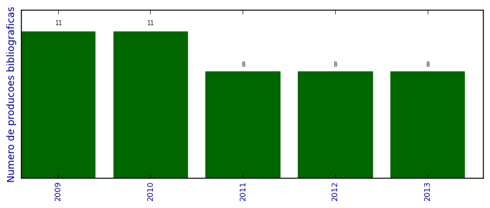

UFSM - Análise do Lattes
Total de produção bibliográfica

Número total de itens: 46
2013
| 1. | BELLO, MARIANA DE CARLO ; AOZANI, VANESSA ; BUENO, RENATA RIZZOLO ; PACHALY, RAQUEL ; Villetti, Marcos Antonio ; POZZOBON, ROSELAINE TEREZINHA. Análise da intensidade de fluorescência em diferentes compósitos após exposição a agentes clareadores caseiros à base de peróxido de carbamida em diferentes concentrações. Revista da Faculdade de Odontologia. Universidade de Passo Fundo. v. 18, p. 44-48, 2013.  [ citações Google Scholar | citações Microsoft Acadêmico | busca Google ] Qualis: Não identificado (Revista da Faculdade de Odontologia. Universidade de Passo Fundo) |
| 2. | BUENO, R. P. ; SALOMONE, P. ; Villetti, Marcos Antonio ; ROSELAINE TEREZINHA POZZOBON. Effect of bleaching agents on the fluorescence of composite resins. European Journal of Esthetic Dentistry. v. 8, p. 582-591, 2013. [ citações Google Scholar | citações Microsoft Acadêmico | busca Google ] Qualis: Não identificado (European Journal of Esthetic Dentistry) |
| 3. | Clarissa P. Frizzo ; Aniele Z. Tier ; Izabelle M. Gindri ; Lilian Buriol ; Marcos Antonio Villetti ; Nilo Zanatta ; Marcos A.P. Martins. Nanoestructure Evaluation of Ionic Liquid Aggregates by Spectroscopy. Em: Sarhan M. Musa. (Org.). Nanoscale Spectroscopy with Applications. 1ed. : CRC Press. 2013.v. 1, p. 215-274. [ citações Google Scholar | citações Microsoft Acadêmico | busca Google ] |
| 4. | CRUZ DOS SANTOS, SANDRA ; FERNANDES LOGUERCIO, LARA ; SILVA CORRÊA, DIOGO ; RAMOS NUNES, MICHAEL ; ANTÔNIO VILLETTI, MARCOS ; TERESINHA SANTOS GARCIA, IRENE. Interfacial properties and thermal stability of modified poly( -phenylene isophthalamide) thin films. Surface and Interface Analysis (Print). v. 45, p. 837-843, 2013. [ citações Google Scholar | citações Microsoft Acadêmico | busca Google ] Qualis: B3 |
| 5. | FRIZZO, CLARISSA P. ; Villetti, Marcos A. ; TIER, ANIELE Z. ; GINDRI, IZABELLE M. ; BURIOL, LILIAN ; ROSA, FERNANDA A. ; CLARAMUNT, ROSA M. ; SANZ, DIONISIA ; MARTINS, MARCOS A.P.. Structural and thermodynamic properties of new pyrazolo[3,4-d]pyridazinones. Thermochimica Acta (Print). v. 574, p. 63-72, 2013. [ citações Google Scholar | citações Microsoft Acadêmico | busca Google ] Qualis: B2 |
| 6. | Irene Teresinha Santos Garcia ; Lara Fernandes Loguércio ; Fabiane Grecco da Silva Porto ; Marcos Antonio Villetti. Filmes de Poli(m-fenileno isoftalamida) Modificados com Ácido Iodoacético e Blendas com Álcool Polivinílico. Em: 12º Congresso Brasileiro de Polímeros, 2013, Florianópolis. 12º Congresso Brasileiro de Polímeros, v. 1, p. 1-1, 2013. [ citações Google Scholar | citações Microsoft Acadêmico | busca Google ] |
| 7. | MAIA, ANA M. S. ; Villetti, Marcos A. ; BORSALI, Redouane ; BALABAN, ROSANGELA C.. Polyelectrolyte and Non-Polyelectrolyte Polyacrylamide Copolymer Solutions: the Role of Salt on the Intra- and Intermolecular Interactions. Journal of the Brazilian Chemical Society (Impresso). v. 24, p. 1871-1879, 2013. [ citações Google Scholar | citações Microsoft Acadêmico | busca Google ] Qualis: A2 |
| 8. | Marcos Antonio Villetti ; SQUIZANI, Fatima. O Programa-Referência do Vestibular da UFSM e a Química. 2013. Curso de curta duração ministrado/Extensão |
2012
| 1. | AMARAL, GUILHERME PIRES ; CARVALHO, NELSON RODRIGUES DE ; BARCELOS, RÔMULO PILLON ; DOBRACHINSKI, FERNANDO ; PORTELLA, RAFAEL DE LIMA ; SILVA, MICHELE HINERASKY DA ; LUGOKENSKI, THIAGO HENRIQUE ; MUNDSTOCK DIAS, GLAECIR ROSENI ; DA LUZ, SÔNIA CRISTINA ALMEIDA ; BOLIGON, ALINE AUGUSTI ; ATHAYDE, MARGARETH LINDE ; Villetti, Marcos Antonio ; SOARES, FÉLIX ALEXANDRE ANTUNES ; FACHINETTO, ROSELEI. Protective action of ethanolic extract of Rosmarinus officinalis L. in gastric ulcer prevention induced by ethanol in rats. Food and Chemical Toxicology. v. 55, p. 48-55, 2012. [ citações Google Scholar | citações Microsoft Acadêmico | busca Google ] Qualis: A2 (Food and Chemical Toxicology) |
| 2. | Claudio S. Silveira ; Samuel R. Mendes ; Villetti, Marcos Antônio ; Davi F. Back ; Teodoro S. Kaufman. CeIII-Promoted oxidation. Efficient aerobic one-pot eco-friendly synthesis of oxidized bis(indol-3-yl)methanes and cyclic tetra(indolyl)dimethanes. Green Chemistry (Print). v. 14, p. 2912, 2012. [ citações Google Scholar | citações Microsoft Acadêmico | busca Google ] Qualis: A1 (Green Chemistry (Print)) |
| 3. | Collazzo, Gabriela Carvalho ; Foletto, Edson Luiz ; Jahn, Sérgio Luiz ; Villetti, Marcos Antônio. Degradation of Direct Black 38 dye under visible light and sunlight irradiation by N-doped anatase TIO2 as photocatalyst. Journal of Environmental Management. v. 98, p. 107-111, 2012. [ citações Google Scholar | citações Microsoft Acadêmico | busca Google ] Qualis: A2 |
| 4. | Martins, M. A. P. ; Zanatta, N. ; Bonacorso, H. G. ; Tier, a. Z. ; Gindri, I. M. ; Freitas, D. L. ; Frizzo, C. P. ; Villetti, M.A. ; Campos, P. T.. Estudo Estrutural e Análises Térmicas de Pirazolo[1,5-a]pirimidinas. Em: 35a Reunião Anual da Sociedade Brasileira de Química, 2012, Águas de Lindóia. Responsabilidade, Ética e Responsabilidade Social, v. 1, 2012. [ citações Google Scholar | citações Microsoft Acadêmico | busca Google ] |
| 5. | VENDRAME, Z. B. ; Vânia Regina Gabbi Polli ; VillettiI, M. A.. Investigação da Fotoestabilidade e da Capacidade Antioxidante do Extrato de Plectranthus barbatus em Etanol. Em: XIX Encontro de Química da Região Sul - XIX SBQ Sul, 2012, Tubarão. XIX SBQ Sul 2012, v. 1, 2012. [ citações Google Scholar | citações Microsoft Acadêmico | busca Google ] |
| 6. | Villetti, M.A. ; Marinice Martins Reis ; F. I. Ziembowicz ; Leandro Machado de Carvalho ; Marcelo Barcellos da Rosa ; A. F. Ourique ; R. C. R. Beck ; D. Carnelosso. Nanoencapsulation as a Way to Increase the Photostability of Dehydrodieugenol. Em: XI Brazilian Materials Research Society Meeting -SBPMAT, 2012, Florinaópolis. Program Book, v. 1z, p. 98-98, 2012. [ citações Google Scholar | citações Microsoft Acadêmico | busca Google ] |
| 7. | Villetti, Marcos Antônio ; SQUIZANI, Fatima. Escola, Conhecimento e Química. 2012. Curso de curta duração ministrado/Extensão |
| 8. | Vânia Regina Gabbi Polli ; Villetti, Marcos Antonio ; VENDRAME, Z. B. ; Marianna Padoin de Santana. Estudo da Fotoestabilidade e da Atividade Antioxidante do Extrat de Plectranthus barbatus em Acetato de Etila. Em: VI Simpósio Iberoamericano de Plantas Medicinais, 2012, Ponta Grossa. VI Simpósio Iberoamericano de Plantas Medicinais, v. 1, 2012. [ citações Google Scholar | citações Microsoft Acadêmico | busca Google ] Qualis: Não identificado (VI Simpósio Iberoamericano de Plantas Medicinais, 2012, Ponta Grossa. VI Simpósio Iberoamericano de Plantas Medicinais) |
2011
| 1. | Darliana Mello Souza ; Jaqueline Fabiane Reicher ; Villetti, Marcos Antônio. Identificação de Antibiótico em água: Contextualização para o ensino de química. Em: 31º Encontro de Debates sobre o Ensino de Química - EDEQ, v. 1, 2011. [ citações Google Scholar | citações Microsoft Acadêmico | busca Google ] Qualis: Não identificado (31º Encontro de Debates sobre o Ensino de Química - EDEQ) |
| 2. | Diego Silva Paz ; Edson Luiz Foletto ; Suellen Battistion ; Sérgio Luiz Jahn ; Villetti, Marcos Antonio ; Wido Herwing Schreiner. Influência do tratamento térmico sobre a dopagem do TiO2 com nitrogênio e sua atividade na fotodegradação de corante sob luz visível e irradiação solar. Em: 16º Congresso Brasileiro de Catálise, v. 1, p. 1212-1217, 2011. [ citações Google Scholar | citações Microsoft Acadêmico | busca Google ] Qualis: Não identificado (16º Congresso Brasileiro de Catálise) |
| 3. | Lara Fernandes Loguércio ; Sandra Cruz dos Santos ; Villetti, Marcos Antônio ; Michael Ramos Nunes ; Irene Teresinha Santos Garcia. Poli(m-fenileno isoftalamida) modificada com 2-iodo-1-etanol em mistura com poly(p-cresolformaldeído). Em: 11º Congresso Brasileiro de Polímeros, v. 1, 2011. [ citações Google Scholar | citações Microsoft Acadêmico | busca Google ] Qualis: Não identificado (11º Congresso Brasileiro de Polímeros) |
| 4. | Maia, Ana M. S ; Villetti, Marcos A ; Vidal, Rosangela R. L ; BORSALI, Redouane ; Balaban, Rosangela C. Solution properties of a hydrophobically associating polyacrylamide and its polyelectrolyte derivatives determined by light scattering, small angle x-ray scattering and viscometry. Journal of the Brazilian Chemical Society (Impresso). v. 22, p. 489-500, 2011. [ citações Google Scholar | citações Microsoft Acadêmico | busca Google ] Qualis: A2 |
| 5. | Marinice Martins Reis ; F. I. Ziembowicz ; D. Carnelosso ; Leandro Machado de Carvalho ; Marcelo Barcellos da Rosa ; A. F. Ourique ; R. C. R. Beck ; Villetti, M.A.. Nanoencpsulation as a Way to Increase the Photostability of Antioxidants. Em: FBPOL 2011 - 3rd French Brazilian meeting on Polymers, 2011, Florianopolis. 3rd French Brazilian meeting on Polymers, v. 1, p. A74-A74, 2011. [ citações Google Scholar | citações Microsoft Acadêmico | busca Google ] |
| 6. | POLLI, V. R. G. ; VENDRAME, Z. B. ; VillettiI, M. A. ; Silva da, M. L.. Estudo da estabilidade do extrato de Plectranthus barbatus em acetona e em meio H2O2 e encapsulados com PCL. Em: 34a Reunião Anual da Sociedade Brasileira de Química, 2011, Florianópolis - SC. Anais da 34a Reunião Anual da Sociedade Brasileira de Química, v. 1, 2011. [ citações Google Scholar | citações Microsoft Acadêmico | busca Google ] |
| 7. | Villetti, Marcos A. ; Bica, Clara I. D. ; Garcia, Irene T. S. ; Pereira, Fabiano V. ; Ziembowicz, Francieli I. ; Kloster, Carmen L. ; Giacomelli, Cristiano. Physicochemical Properties of Methylcellulose and Dodecyltrimethylammonium Bromide in Aqueous Medium. Journal of Physical Chemistry. B. v. 115, p. 5868-5876, 2011. [ citações Google Scholar | citações Microsoft Acadêmico | busca Google ] Qualis: A2 |
| 8. | Villetti, Marcos A. ; SOLDI, Valdir ; Rochas, Cyrille ; BORSALI, Redouane. Phase-Separation Kinetics and Mechanism in a Methylcellulose/Salt Aqueous Solution Studied by Time-Resolved Small-Angle Light Scattering (SALS). Macromolecular Chemistry and Physics (Print). v. 212, p. 1063-1071, 2011. [ citações Google Scholar | citações Microsoft Acadêmico | busca Google ] Qualis: B1 |
2010
| 1. | Ana Maria da Silva Maia ; Rosangela R. L. Vidal ; Rosangela C. Balaban ; BORSALI, R. ; VILLETTI, M. A.. Small Angle X-ray Scattering on Hydrophobically Associating Polyacrylamide and its Polyelectrolyte Derivatives. Em: XII International Macromolecular Colloquium, 2010, Gramado - RS. Proceeding of the XII International Macromolecular Colloquium, v. 1, p. 30-30, 2010. [ citações Google Scholar | citações Microsoft Acadêmico | busca Google ] |
| 2. | Barbara Tirloni ; Vania Schwade ; Rafael Stieler ; Ernesto Schulz Lang ; Paulo Piquini ; Villetti, Marcos Antonio ; Marcelo Pereira. Synthesis, Crystal Structure and Optical Properties of Hg-Se Clusters. Em: XV Brazilian Meeting On Inorganic Chemistry, 2010, Angra dos Reis - RJ. BMIC, v. 1, 2010. [ citações Google Scholar | citações Microsoft Acadêmico | busca Google ] |
| 3. | Bruna V. Lima ; Rosangela R. L. Vidal ; Villetti, Marcos Antonio ; Rosangela C. Balaban. Characterization of Hydrophobically Modified Polyacrylamide an its Partially Hydrolyzed Derivative by Static Light Scattering and SAXS. 2010. Apresentação de Trabalho/Conferência ou palestra |
| 4. | Gabriela Carvalho Collazzo ; Sérgio Luiz Jahn ; VILLETTI, M. A. ; Edson Luiz Foletto. Photocatalytic Activity of N-Doped Anatase TiO2 Under Visible Light and Sunlight Irradiation. Em: XVIII Congresso Brasileiro de Engenharia Quimica, v. 1, 2010. [ citações Google Scholar | citações Microsoft Acadêmico | busca Google ] Qualis: Não identificado (XVIII Congresso Brasileiro de Engenharia Quimica) |
| 5. | Laura Gizele Mascarin ; Tiele Medianeira Rizzetti ; VILLETTI, M. A.. Solubilidade: uma abordagem contextualizada. Em: XVIII Encontro de Quimica da Regiéao Sul, 2010, Curitiba -PR. Anais do XVIII Encontro de Quimica da Regiéao Sul, v. 1, 2010. [ citações Google Scholar | citações Microsoft Acadêmico | busca Google ] |
| 6. | Mariana M. Bassaco ; Margiani P. Fortes ; Francieli Rinaldi ; Villetti, Marcos A. ; Claudio S. Silveira. Síntese de bis((4-(2-viniltio)vinil)estiril)) teluretos: Uma nova classe de organocalcogenetos com propriedades luminiscentes. Em: III Encontro sobre Selênio e Telúrio - ESeTe, 2010, Florianópolis - SC. III Encontro sobre Selênio e Telúrio - ESeTe, v. 1, 2010. [ citações Google Scholar | citações Microsoft Acadêmico | busca Google ] |
| 7. | POLLI, V. R. G. ; Zilda B. Vendrame ; VILLETTI, M. A.. Efeito da adiação de H2O2 na Degradação Fotolitica de Extratos de Plectranthus Barbatus. Em: XVIII Encontro de Quimica da Região Sul, 2010, Curitiba. Anais do XVIII Encontro de Quimica da Região Sul, v. 1, p. FQ015-FQ015, 2010. [ citações Google Scholar | citações Microsoft Acadêmico | busca Google ] |
| 8. | SANTOS, Maria Alice Santanna dos ; BORTOLUZZI, E. C. ; VILLETTI, M. A.. Sediment Characterization. Em: Editores: Cristiano Poleto e Sussanne Charlesworth. (Org.). Sedimentology of Aqueous Systems. Oxford. : Wiley-Blackwell Publishing. 2010.v. 1, p. 80-107. [ citações Google Scholar | citações Microsoft Acadêmico | busca Google ] |
| 9. | Stieler, Rafael ; Bublitz, Fabrício ; Burrow, Robert A ; Oliveira, Gelson N. Manzoni de ; Villetti, Marcos A ; Pereira, Marcelo B ; Piquini, Paulo ; Lang, Ernesto S. Synthesis and characterization of [Cd8Cl2Se(SePh)12(PCy3)2] 2.5CH3OH. Journal of the Brazilian Chemical Society (Impresso). v. 21, p. 2146-2153, 2010. [ citações Google Scholar | citações Microsoft Acadêmico | busca Google ] Qualis: A2 |
| 10. | Tirloni, Bárbara ; Back, Davi F. ; Burrow, Robert A. ; Oliveira, Gelson N. M. de ; Villetti, Marcos A. ; Lang, Ernesto S.. Synthesis and crystal structure of chalcogenide cluster compound. Journal of the Brazilian Chemical Society (Impresso). v. 21, p. 1230-1236, 2010. [ citações Google Scholar | citações Microsoft Acadêmico | busca Google ] Qualis: A2 |
| 11. | VILLETTI, M. A. ; POLLI, V. R. G. ; VENDRAME, Z. B.. Determinação das Constantes Cinéticas de Decomposição Fotolitica dos Extratos de Plectranhus barbatus em Aceto de Etila e n-Hexano. Em: 62a Reuniao Anual da SBPC, 2010, Natal -RN. Ciencias do Mar: herança para o futuro, v. 1, p. 7-7, 2010. [ citações Google Scholar | citações Microsoft Acadêmico | busca Google ] |
2009
| 1. | Ana Maria da Silva Maia ; Rosangela R. L. Vidal ; GARCIA, R. B. ; BORSALI, R. ; VILLETTI, M. A.. Study of the conformation of hydrophobically associating polyacrylamide and its polyelectrolyte derivatives through small angle X-ray scattering. Activity Report (Laboratório Nacional de Luz Síncrotron). v. 1, p. 1-2, 2009. [ citações Google Scholar | citações Microsoft Acadêmico | busca Google ] Qualis: Não identificado (Activity Report (Laboratório Nacional de Luz Síncrotron)) |
| 2. | Barbara Tirloni ; Rafael Stieler ; Ernesto Schulz Lang ; Gelson Manzoni de Oliveira ; Villetti, Marcos Antonio. Sintese e Analise Estrutural de Clusters Derivados de bis(fenilseleneto) de Mercurio. Em: 32a Reunião Anual da SBQ, 2009, Fortaleza. Quimicos Para Uma Potencia Emergente. Fortaleza: Realce Editora, v. 1, p. QI-138-QI-138, 2009. [ citações Google Scholar | citações Microsoft Acadêmico | busca Google ] |
| 3. | Daiane Flores Dalla Lana ; Marta Palma Alves ; Villetti, Marcos Antonio. Implantação do Espectrofotometro no Controle de Qualidade de Produtos Acabados da Farmacia Escola Comercial (FEC). Em: 2 Forum Extensão Conta, 2009, Santa Maria - RS. 2 Forum Extensão Conta, v. 1, 2009. [ citações Google Scholar | citações Microsoft Acadêmico | busca Google ] |
| 4. | Ernesto Schulz Lang ; Barbara Tirloni ; Gelson Manzoni de Oliveira ; VILLETTI, M. A.. New examples of the exploitation of intermediary ligands in the synthesis of polymeric (u-Se)Hg-clusters. Inorganica Chimica Acta. v. 362, p. 3114-3118, 2009. [ citações Google Scholar | citações Microsoft Acadêmico | busca Google ] Qualis: B2 (Inorganica Chimica Acta (Testo stampato)) |
| 5. | Ernesto Schulz Lang ; Robert A. Burrow ; Rafael Stieler ; Villetti, Marcos Antonio. Cadmium bis(phenylselenolate) as a precursor for the synthesis of polymeric Cd(u-Se)clusters: Crystal and molecular structures of [Cd4(SePh)7(PPh3)X]n(X=Cl,Br). Journal of Organometallic Chemistry. v. 694, p. 3039-3042, 2009. [ citações Google Scholar | citações Microsoft Acadêmico | busca Google ] Qualis: B1 (Journal of Organometallic Chemistry (Print)) |
| 6. | Gabrielly Vieira Ribeiro ; Heveline Enzweiler ; Leandro Machado de Carvalho ; Denise Boher do Nascimento ; Pedro Luiz Manique Barreto ; Paulo Cicero do Nascimento ; Marcelo Barcellos da Rosa ; Villetti, Marcos Antonio. Estudo Cinético da Decomposição Fotolitica de Extratos de Alecrim (Rosmarinius officinalis L.) e de acido rosmarinico padrão em HPLC-RP. Em: 24 Jornada Academica Integrada -UFSM, 2009, Santa Maria -RS. 24 Jornada Academica Integrada - JAI, v. 1, 2009. [ citações Google Scholar | citações Microsoft Acadêmico | busca Google ] |
| 7. | Gelson Manzoni de Oliveira ; Manfredo Horner ; Aline Machado ; Davi Fernando Back ; Bernardo Almeida Iglesias ; Villetti, Marcos Antonio. Stabilization of substitued triazene oxides by lanthanides chelation: Synthesis, TGA evaluations and x-ray structural features of [MIII{O2NPhNNN(O)Ph}4(Et3NH).H20 (M=La3+, Dy3+; Et=C2H5). Journal of Molecular Structure. v. 928, p. 85-88, 2009. [ citações Google Scholar | citações Microsoft Acadêmico | busca Google ] Qualis: B2 (Journal of Molecular Structure (Print)) |
| 8. | Heveline Enzweiler ; Gabrielly Vieira Ribeiro ; Leandro Machado de Carvalho ; Denise Boher do Nascimento ; Paulo Cicero do Nascimento ; Pedro Luiz Manique Barreto ; Marcelo Barcellos da Rosa ; Villetti, Marcos Antonio. Acompanhamento da fotólise de extratos de Alecrim (Rosmarinius officinalis L.) e de acido rosmarinico padrão em UV-Vis. Em: Jornada Academica Integrada -UFSM, 2009, Santa Maria -RS. Jornada Academica Integrada - JAI, v. 1, 2009. [ citações Google Scholar | citações Microsoft Acadêmico | busca Google ] |
| 9. | Michel Brondani ; Diogo Sebastian Pippi Calegari ; Villetti, Marcos Antonio. Esudo da interação entre o Alginato de Sodio e Caulinita em Solução Aquosa Através do Método da Viscosimetria. Em: 24 Jornada Academica Integrada -UFSM, 2009, Santa Maria -RS. 24 Jornada Academica Integrada - JAI, v. 1, 2009. [ citações Google Scholar | citações Microsoft Acadêmico | busca Google ] |
| 10. | VENDRAME, Z. B. ; POLLI, Vania Regina ; Villetti, Marcos Antonio. Estudo Cinético da Fotólise do Extrato de Plectranthus barbatus em Etanol e Clorofórmio. Em: XVII Encontro de Quimica da Região Sul (SBQ Sul), 2009, Rio Grande -RS. SBQ Sul Desafios em Quimmica Tecnologica e Ambiental, v. 1, p. FQ233, 2009. [ citações Google Scholar | citações Microsoft Acadêmico | busca Google ] |
| 11. | Villetti, Marcos Antonio ; Marinice Martins Reis. Polimeros e as Interações Intermoleculares Através de Experimentos Simples. Em: XVII Encontro de Quimica da Região Sul - SBQ Sul, 2009, Rio Grande -RS. 17 SBQ Sul Desafios em Quimica Tecnologica e Ambiental, v. 1, p. EQ369, 2009. [ citações Google Scholar | citações Microsoft Acadêmico | busca Google ] |
(*) Relatório criado com produções desde 2009 até HOJE
Data de processamento: 11/04/2014 14:25:07